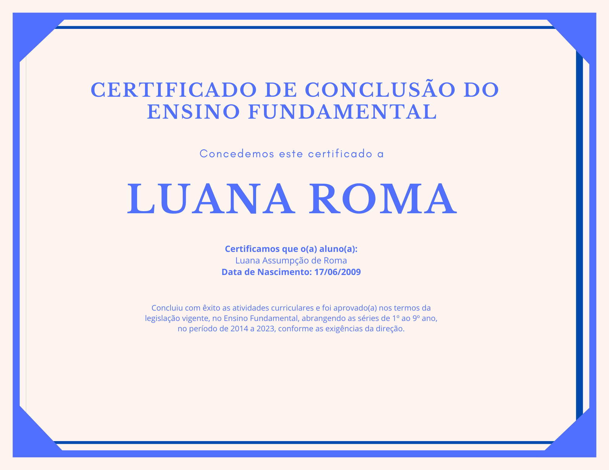

Estudante de Informática - 2º Ano do Ensino Médio
Atualmente, estou no segundo ano do Ensino Médio e, como estou começando a minha jornada na área de Informática, ainda não tenho certificados formais. No entanto, estou continuamente aprendendo e me aprimorando em diversas áreas da tecnologia, e pretendo conquistar certificados nos próximos anos.
Quando eu começar a obter certificações, adicionarei aqui as conquistas, cursos online e workshops que participei, além de projetos realizados.
Embora eu ainda não tenha certificados formais, estou adquirindo conhecimento em várias áreas de Informática, como:
Estou me preparando para obter certificações em cursos de linguagens de programação e desenvolvimento de sites.